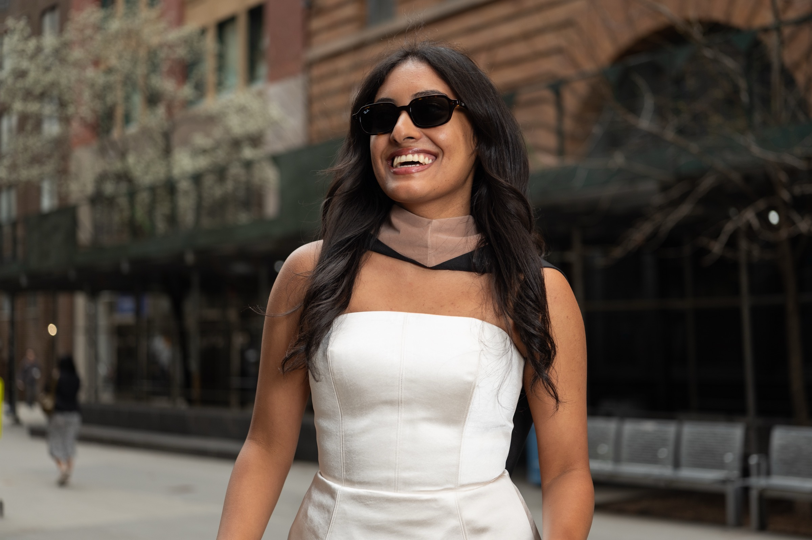
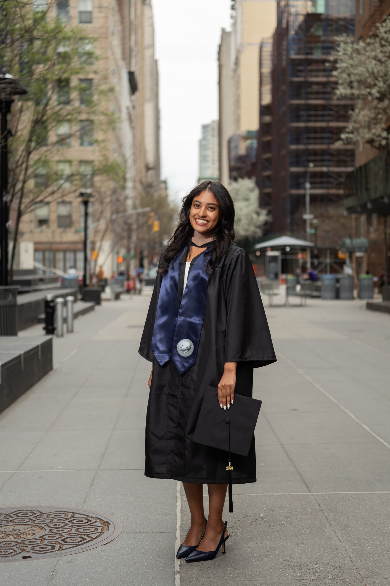
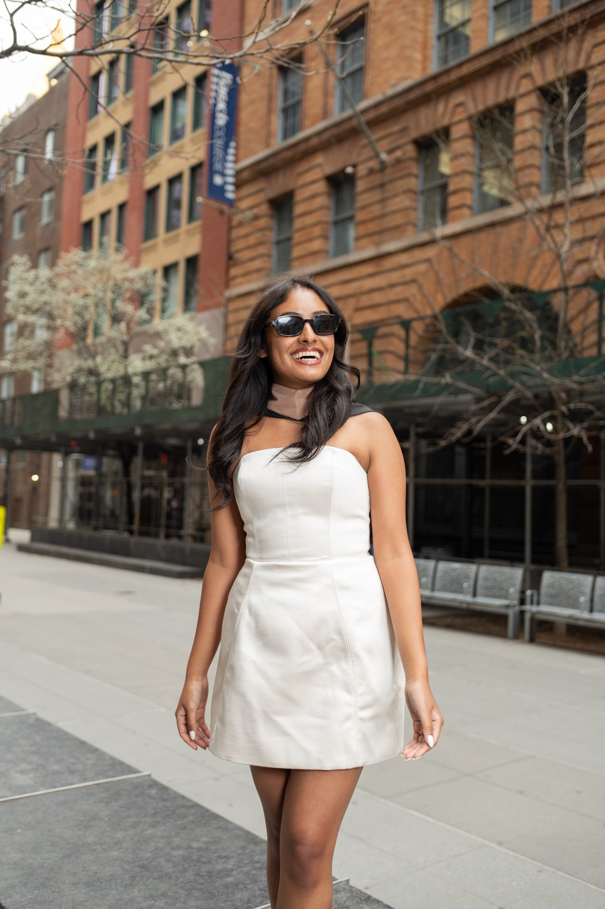
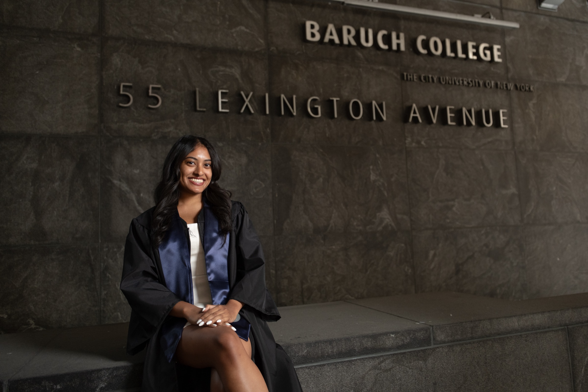

On the day everything changes. The cap, the gown, the particular way she carries herself when she knows she's done something hard and done it well.
Philadelphia · graduation morning
The city was loud that morning. Families everywhere, balloons, the particular chaos of a graduation day. Sara moved through it with a kind of stillness, unhurried, like she already knew what this day meant and didn't need to prove it to anyone.
I find graduation portraits interesting because there's always something underneath the ceremony. Behind the robe and the pose is a person who has spent years becoming themselves, who knows things now that they didn't know before.
Sara had that. A quiet confidence that didn't need announcing.


We found a spot away from the crowds, a bit of shade and open sky. The light wasn't perfect, but nothing ever is, and film is forgiving in the ways that matter. It softens what should be soft.


Philadelphia · Spring 2025
At some point we stopped directing and just walked. Those are usually the best photographs, the ones made when no one is performing anything.
It was a good day. The kind that feels ordinary until later, when you look back and realize it was anything but.
Congratulations, Sara.